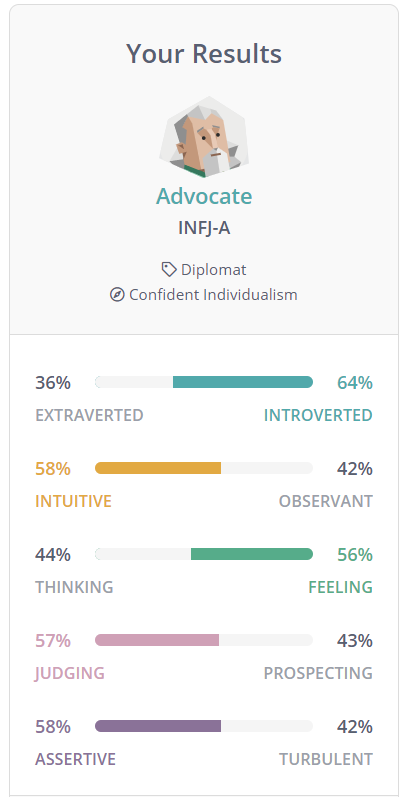

Identity, Values & Strengths
Who am I and what do I bring?
22nd April 2021 | Sprint 2
I value positivity, resilience, respect and integrity and for my identity I’m curious and optimistic.
Doing the 16 Personalities test I've come out as an advocate! Surprised at first but after reading some of the traits, it seems pretty accurate. Here's a summary:
Advocates are the rarest personality types of all. Still, Advocates leave their mark on the world. They have a deep sense of idealism and integrity, but they aren’t idle dreamers – they take concrete steps to realize their goals and make a lasting impact.
Advocates’ unique combination of personality traits makes them complex and quite versatile. For example, Advocates can speak with great passion and conviction, especially when standing up for their ideals. At other times, however, they may choose to be soft-spoken and understated, preferring to keep the peace rather than challenge others.
Fun facts about Advocates:
- ... enjoy “people watching”
- ... have fears they know are irrational
- ... say modern human beauty standards are unrealistic
- ... go to great lengths to avoid stress
- ... re-read an e-mail after sending it
A few years ago I did the Gretchen Rubin 4 Tendencies quiz. It helps understand how you respond to expectations. I came out at as Questionner.
In summary a Questionner tends to have the following belief: “I do what I think is best, according to my judgment. If it doesn’t make sense, I won’t do it.”
Both tests sum me up pretty well.
Ethical decision
Having thought about this one a lot, I don’t recall any standout situations where I’ve had to consider my ethical position - lucky really! However my ethical position has shifted in recent years and it may create a situation sometime in the future.
Since becoming a parent and a stay at home dad, I’ve witnessed and experienced the stigma associated with parents not following the ‘traditional’ roles in the family unit. Both myself and my partner have had comments from friends, family, colleagues and strangers. Whether it’s light hearted or a bit more intentional, it’s shown me that we still haven’t got over the inequality and sexism issues that have plagued (mainly) women for centuries.
As I rejoin the workforce I expect to experience some old fashioned beliefs in what men and women ‘should’ be doing. I’m going to be proactive and champion equality in the workplace and in society. I believe more men should be experiencing what it's like to be a stay at home parent and have their career affected by it. We should be removing obstacles for women to have a career if they wish and having a diverse workforce can only benefit the employer and wider society.
My culture
My parents love a good cliché..
My mum always says ‘things happen for a reason’. Technically she’s correct according to the laws of cause and effect, however I don’t think that’s what she means. It’s a way for her to understand and accept bad things that happen in life. Add some logic to the illogical. For me it’s become a philosophy, a tactic for being resilient and optimistic with whatever life throws at you. Sometimes bad or unexplainable things happen and that’s okay, carry on.
My dad always used to say ‘the world is your oyster’ - meaning you can be whoever and whatever you want if you put your mind to it. He wanted me to believe in myself and feel optimistic about my abilities and opportunities. Growing up in a middle class household in England I wasn’t short of opportunites and faced almost zero discrimination.
I was surrounded by love and support that has laid the foundations to my values and identity as an adult.
Strengths & limitations
My strengths include being curious, embracing change and challenging the status quo. I believe these traits will help me in the tech sector as it’s an industry that is always changing and evolving.
My limitations are linked to my strengths in that my curiosity means I’m easily distracted by different ideas and forget the task in hand. It means some projects start with a lot of enthusiasm but never get finished.
Working with others
Early in my career, I worked in corporate fundraising for a charity (raising money through businesses and corporate contacts), there was a lot of reluctance to think outside the box, even if it made sense. After spending a number of years undertaking a range of different fundraising activities it was obvious to me that some were more successful than others.
I became reluctant to manage activities that produced little results. It was clear to me that we should be focusing on the activities that produced the best return on investment to ensure budgets weren’t wasted.
I would complain to my manager and moan to colleagues but without backing up any of my claims I must have come across as immature and unprofessional. The culture was to just do your job, we've always done it this way.
Only later in my career did I realise the art of influence and persuasion - getting on the level of the person you are trying to communicate with and use their language.
In highsight I would have done some research on how other charities operate, analysed past activities and financial reports and track where time is spent vs revenue earned. This may have highlighted some data points that would support my opinions. Senior management would then have evidence to support a change in strategy.
Thanks for reading :-)